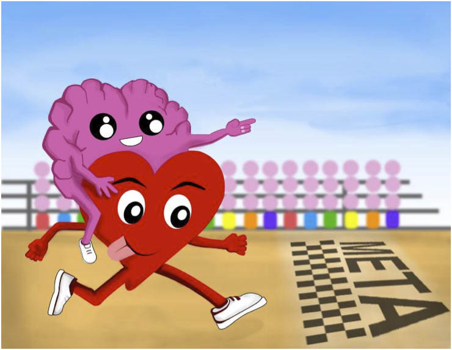

El mundo del deporte está lleno de emociones y momentos memorables. Los atletas de todo el mundo compiten en una variedad de disciplinas, desde el fútbol hasta el baloncesto, pasando por el tenis y el atletismo. Cada día, surgen historias emocionantes de victoria y superación en el mundo del deporte.
Ya sea siguiendo a tu equipo favorito, practicando tu deporte preferido o simplemente disfrutando de los eventos deportivos en la televisión, el deporte despierta pasión y un sentido de comunidad en todo el mundo. En esta sección, te mantendremos informado sobre las últimas noticias, resultados y eventos deportivos que están marcando la pauta en la actualidad.
